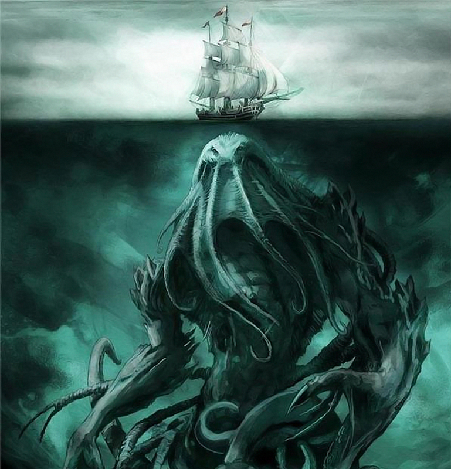

Cosmicism
The central theme of Lovecraft's corpus is cosmicism. Cosmicism is a literary philosophy that argues that humanity is an insignificant force in the universe. Despite appearing pessimistic, Lovecraft thought of himself being as being a cosmic indifferentist, which is expressed in his fiction. In it, human beings are often subject to powerful beings and other cosmic forces, but these forces are not so much malevolent as they are indifferent toward humanity. He believed in a meaningless, mechanical, and uncaring universe that human beings could never fully understand. There is no allowance for beliefs that could not be supported scientifically.Lovecraft first articulated this philosophy in 1921, but he did not fully incorporate it into his fiction until five years later. "Dagon", "Beyond the Wall of Sleep", and "The Temple" contain early depictions of this concept, but the majority of his early tales do not analyze the concept. "Nyarlathotep" interprets the collapse of human civilization as being a corollary to the collapse of the universe. "The Call of Cthulhu" represents an intensification of this theme. In it, Lovecraft introduces the idea of alien influences on humanity, which would come to dominate all subsequent works.In these works, Lovecraft expresses cosmicism through the usage of confirmation rather than revelation. Lovecraftian protagonists do not learn that they are insignificant. Instead, they already know it and have it confirmed to them through an event.

Decline of civilization
For much of his life, Lovecraft was fixated on the concepts of decline and decadence. More specifically, he thought that the West was in a state of terminal decline.Starting in the 1920s, Lovecraft became familiar with the work of the German conservative-revolutionary theorist Oswald Spengler, whose pessimistic thesis of the decadence of the modern West formed a crucial element in Lovecraft's overall anti-modern worldview. Spenglerian imagery of cyclical decay is a central theme in At the Mountains of Madness. S. T. Joshi, in H. P. Lovecraft: The Decline of the West, places Spengler at the center of his discussion of Lovecraft's political and philosophical ideas. According to him, the idea of decline is the single idea that permeates and connects his personal philosophy. The main Spenglerian influence on Lovecraft would be his view that politics, economics, science, and art are all interdependent aspects of civilization. This realization led him to shed his personal ignorance of then-current political and economic developments after 1927.[178] Lovecraft had developed his idea of Western decline independently, but Spengler gave it a clear framework.
Science
Lovecraft shifted supernatural horror away from its previous focus on human issues to a focus on cosmic ones. In this way, he merged the elements of supernatural fiction that he deemed to be scientifically viable with science fiction. This merge required an understanding of both supernatural horror and then-contemporary science.Lovecraft used this combined knowledge to create stories that extensively reference trends in scientific development. Beginning with "The Shunned House", Lovecraft increasingly incorporated elements of both Einsteinian science and his own personal materialism into his stories. This intensified with the writing of "The Call of Cthulhu", where he depicted alien influences on humanity. This trend would continue throughout the remainder of his literary career. "The Colour Out of Space" represents what scholars have called the peak of this trend. It portrays an alien lifeform whose otherness prevents it from being defined by then-contemporary science.

Philosophical
In Weird Realism: Lovecraft and Philosophy, speculative realist philosopher Graham Harman argues that Lovecraft was a "productionist" author. He describes Lovecraft as having been an author who was uniquely obsessed with gaps in human knowledge. He goes further and asserts that Lovecraft's personal philosophy as being in opposition to both idealism and David Hume. In his view, Lovecraft resembles Georges Braque, Pablo Picasso, and Edmund Husserl in his division of objects into different parts that do not exhaust the potential meanings of the whole. The anti-idealism of Lovecraft is represented through his commentary on the inability of language to describe his horrors. Harman also credits Lovecraft with inspiring parts of his own articulation of object-oriented ontology.According to Lovecraft scholar Alison Sperling, this philosophical interpretation of Lovecraft's fiction has caused other philosophers in Harmon's tradition to write about Lovecraft. These philosophers seek to remove human perception and human life from the foundations of ethics. These scholars have used Lovecraft's works as the central example of their worldview. They base this usage in Lovecraft's arguments against anthropocentrism and the ability of the human mind to truly understand the universe. They have also played a role in Lovecraft's improving literary reputation by focusing on his interpretation of ontology, which gives him a central position in Anthropocene studies.